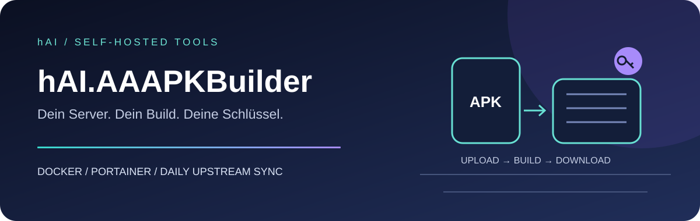

🐳 Portainer-ready
Compose-Datei aus dem Repository verwenden und das GHCR-Image auf einem Linux-amd64-Host starten.

🚘 AndroidAutoMaker als selbst gehosteter Docker-/Portainer-Stack – mit persistenten Signierschlüsseln und täglichem Upstream-Abgleich.


Compose-Datei aus dem Repository verwenden und das GHCR-Image auf einem Linux-amd64-Host starten.
Signierschlüssel und Passwortdateien in einem eigenen Volume sichern – unabhängig vom Container.
Täglicher Commit-Abgleich mit Build- und Smoke-Test vor automatischer Übernahme.
Die ursprüngliche Anwendung und ihre Konfigurationsanforderungen bleiben erhalten. Eine erfolgreiche Konvertierung und Android-Auto-Kompatibilität sind nicht garantiert.
Voraussetzung: Docker Standalone auf Linux amd64/x86_64. ARM64 wird zunächst nicht unterstützt. Vor Deployment einen erfolgreichen GHCR-Build und die Paketsichtbarkeit prüfen; andernfalls Registry-Zugang in Portainer hinterlegen.
| Einstellung | Wert |
|---|---|
| Repository | https://github.com/jbkunama1/hAI.AAAPKBuilder |
| Reference | refs/heads/main |
| Compose path | docker-compose.yml |
| Image | ghcr.io/jbkunama1/hai.aaapkbuilder:latest |
Standardwerte: BIND_IP=127.0.0.1, APP_PORT=4173, IMAGE_TAG=latest. Ohne Anpassung ist der Dienst nur lokal am Docker-Host erreichbar.
Der Abgleich folgt allen Commits, nicht nur Releases. Änderungen direkt in upstream/ werden überschrieben; eigene Container- und Deploymentdateien außerhalb bleiben erhalten. Bei Lizenzänderung stoppt der Sync. Zeitplan ohne Ausführungsgarantie; ein Smoke-Test ist kein APK-Praxistest.
docker compose pull
docker compose up -dKeine allgemeine Benutzeranmeldung. Nicht ungeschützt ins Internet stellen; VPN oder authentifizierenden HTTPS-Proxy verwenden.
aaapk_keys enthält Schlüssel UND Passwortdateien. Gemeinsam sichern, vertraulich halten und nie committen. Verlust kann Update-Installationen verhindern.
Nur vertrauenswürdige APKs mit nötigen Rechten verarbeiten. Nur im geparkten Fahrzeug testen; keine Ablenkung während der Fahrt.
Nein. Grundlage ist AndroidAutoMaker von malebuffy. Dieses Repository ergänzt Containerisierung, CI und Dokumentation. Keine Verbindung zu Google und keine Kompatibilitätsgarantie.
aaapk_keys speichert Signierschlüssel und Passwörter, aaapk_work temporäre Jobs und Ausgaben, aaapk_framework den Framework-Cache. Laufende Jobzustände liegen zusätzlich im RAM und überleben keinen Neustart.
Die optionale ADB-Funktion braucht eine gesonderte Verbindung vom Server/Container zum Telefon. Der Standardstack richtet keine USB- oder ADB-Verbindung ein. Ein Telefon am Browser-Client ist nicht automatisch verbunden.
Am konkreten Lauf unter GitHub Actions. Badges zeigen Workflowstatus, keine erfolgreiche APK-Konvertierung und kein Sicherheitszertifikat.